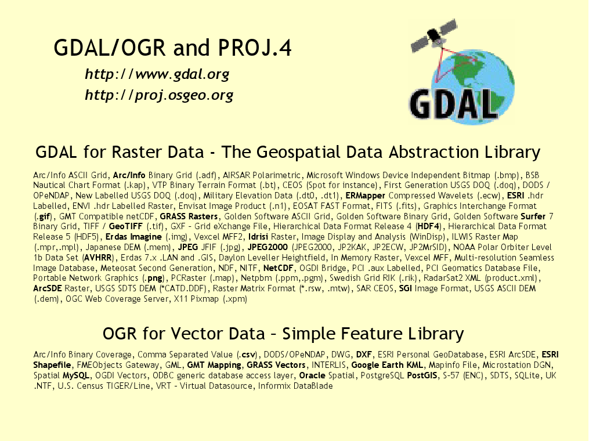

GDAL/OGR¶
About¶
Geospatial Data Abstraction Library (GDAL/OGR) は、多数のラスタ、ベクタ地理空間情報フォーマット変換用のコマンドラインユーティリティです。
このユーティリティはクロスプラットフォームの C++ ライブラリに基づいて作成しており、数多くのプログラミング言語からアクセスできます。ライブラリとして、サポートしている全てのフォーマットについて、アプリケーション呼び出しのための単一抽象データモデルを提供しています。
GDAL/OGR は地理空間データを扱うライブラリでは最も幅広く利用されています。MapServer、GRASS、QGIS、OpenEV など多数のアプリケーションで主要なデータアクセスエンジンとして使用されています。また、OSSIM、Cadcorp SIS、FME、Google Earth、VTP、Thuban、ILWIS、MapGuide、ArcGISなどのパッケージソフトウェアでも使用されています。
{kind=link}
主な機能¶
- データ変換、画像変形、切り出し、その他一般的な操作を行うコマンドラインユーティリティ。
- ラスタデータの高度な操作。タイリング、サムネイル作成
- 4GBを超えるサイズのファイルをサポート
- Python、Java、C#、Ruby、VB6、Perl からのライブラリアクセス
- PROJ.4 及び OGC Well-Known テキスト座標系記述に基づいた座標系エンジン
サポートする主なフォーマット¶
GDAL は140を超えるラスタフォーマットを、また、OGR は80を超えるベクタフォーマットをサポートしています。
これらは以下を含みます:
- ラスタ: GeoTIFF, Erdas Imagine, SDTS, ESRI Grids, ECW, MrSID, JPEG2000, DTED, NITF, GeoPackage など…
- ベクタ: GeoPackage, ESRI Shapefile, GML, GeoJSON, AutoCAD DWG, MapInfo (tab 及び mid/mif), ESRI Coverages, ESRI Personal Geodatabase, DGN, PostGIS, Oracle Spatial, など…
準拠している標準規格¶
OGR ベクタデータモデルは OGC Simple Features 仕様に準拠しています。
詳細¶
Webサイト: https://gdal.org/
ライセンス: X/MIT style Open Source license
ソフトウェアバージョン: 2.4.2
対応プラットフォーム: Windows, Linux, Mac
API インターフェイス: C, C++, Python, Java, C#, Ruby, VB6 及び Perl
サポート: https://lists.osgeo.org/mailman/listinfo/gdal-dev, https://www.osgeo.org/service-providers/